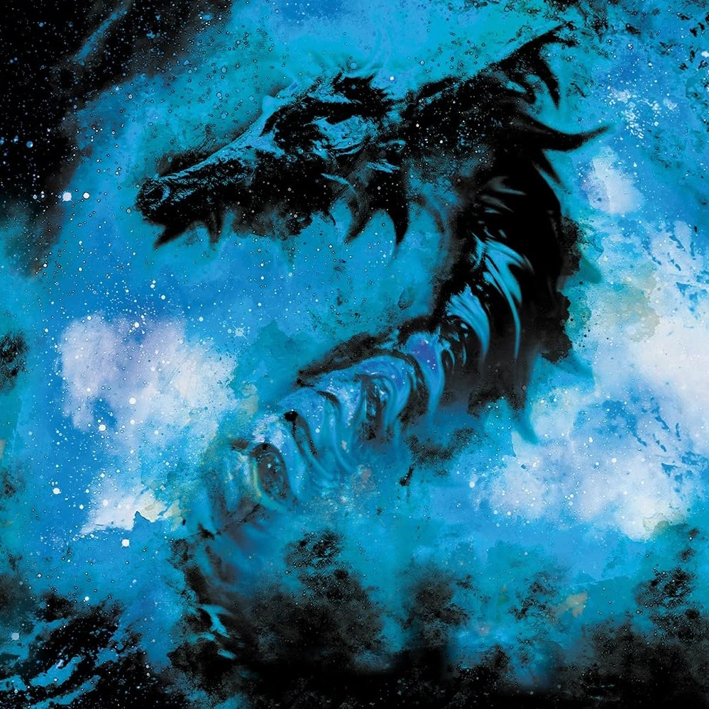
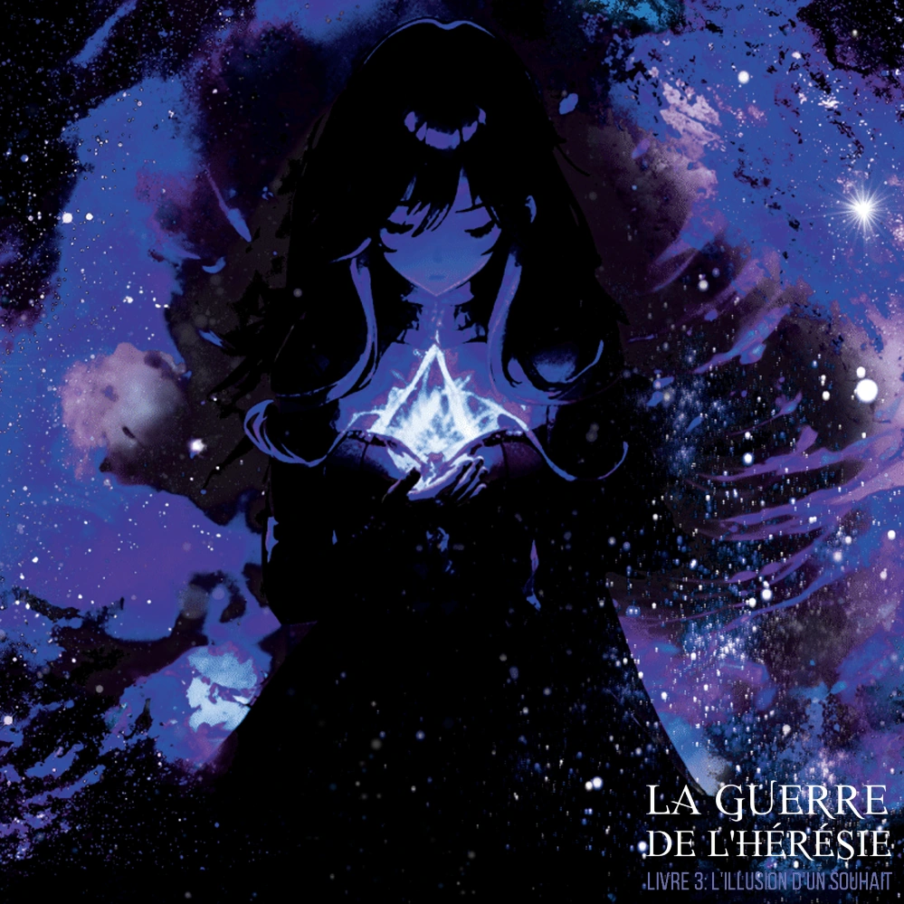

✦ ARCHIVES DE LA GUERRE DE L’HÉRÉSIE ✦
Grimoire et Encyclopédie
Personnages

Nate AnsichtMajor de la 4e Squada

Pruinae EnneisSecond Blanc

IrillaL'enchanteresse de saphir
Faint DesabelChevalier Noir
Ryvin HydrsPrime Major
Aizon LowdelChef des Starriest
Arée LazimaPrincep 4e Squada
Milobellia Vi UrteilPrincesse de Kroyven
CelarianChef du Cercle des Urteils
Alazia HoraReine du Temps
SateliaL'Enfant des étoiles
RayzaRoi des Dragons
CeazeReine des Plantes
Énora Von DessLa Maîtresse des Spectres
OmiaDieu des Realtins
✦ CARTES ET LIEUX ✦
Cartes et lieux
✦ LES LIVRES DE LA SAGA ✦
Livres et Chapitres

✦ LES LEXIQUES DE LA SAGA ✦